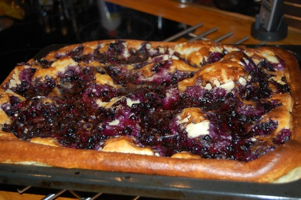

God och spännande variant av den klassiska pannkakan. Blåbärspannkaka är ett mättande och uppskattat alternativ till lunch, middag eller kanske som mellanmål. Servera blåbärspannkakor med en klick vaniljglass.

Ingredienser:
3 ägg
6 dl mjölk
2 1/2 dl vetemjöl
1 msk socker
1/2 tsk salt
300 g djupfrysta blåbär
1/2 dl florsocker
Gör så här:
Sätt ugnen på 200°C.
Vispa ihop äggen och hälften av mjölken.
Tillsätt mjölet och vispa till en klumpfri smet.
Häll i resten av mjölken och tillsätt socker och salt.
Häll smeten i en lätt smord långpanna, ca 30x40 cm (för 4 port).
Strö på blåbären.
Grädda i ca 25 min.
Pudra över florsockret och servera blåbärspannkakor skuren i bitar med en klick